≈ 0 kcalveritabanından hesaplandı
- Protein22 g
- Karb.26 g
- Yağ16 g
Yaz, söyle ya da fotoğrafını çek. Değerleri kaydetmeden önce düzenleyebilirsin.
Antrenman · Beslenme · Kardiyo · Yapay zekâ koçu
Antrenmanın, öğünlerin, koşuların ve koçun tek yerde. Hareketlerin ve kalorin doğrulanmış verilerle hesaplanır; yapay zekâ tabağını fotoğraftan okur, haftanı yorumlar ve sorularını senin verine bakarak yanıtlar. Hedeflerin ise ona bırakılmaz: boyundan, kilondan ve amacından hesaplanır.
Nasıl çalışır
Üye olmadan misafir olarak başlayabilir ya da hesap açabilirsin. Yedi kısa soruyu yanıtla: hedefin, haftada kaç gün, ne kadar süre, nerede ve hangi ekipmanla çalışacağın.
Kilo ver, kas kazan ya da formunu koru. Hedefit haftalık hızını, bitiş tarihini ve günlük kalori ile makro hedefini profilinden hesaplar.
Kişisel programın, animasyonlu hareketlerin ve Fit Koç hazır. Antrenmanı başlat, öğününü ekle, ilerlemeni izle.
Yapay zekâ ve veri
Tabağı fotoğraftan okumak, haftayı yorumlamak, sorularını yanıtlamak, salonda makineyi tanımak: yorucu işleri yapay zekâ üstlenir. Ama kritik sayılar ona bırakılmaz: programındaki hareketler doğrulanmış atlastan seçilir, öğünlerinin kalorisi veritabanından, hedeflerin ise bilimsel formüllerle hesaplanır.
Yaz, söyle ya da fotoğrafını çek. Değerleri kaydetmeden önce düzenleyebilirsin.
“2 dilim ekmek, omlet” yaz: porsiyon ve kalori Türk mutfağı veritabanından hesaplanır. Ya da tabağın fotoğrafını çek: yapay zekâ yemekleri tanır ve miktarı tahmin eder. İkisinde de gram ya da adet seçebilir, kaydetmeden önce düzenleyebilirsin.
“Hedefit AI ile oluştur” hedefini, seviyeni, ekipmanını ve profilini dikkate alarak kişisel program üretir. Hareketleri 600’den fazla hareketlik doğrulanmış atlastan seçer; yapay zekâ programın nedenini kişisel bir notla açıklar. Evde yalnızca dambılın ya da yalnızca direnç bandın olsa bile tüm vücut için program çıkar; program haftalık ya da aylık yenilenir, ana hareketlerin ilerlemen için sabit kalır. Hızlı antrenman, hazır şablon ya da kendi programın da yanında.
“Bugünkü antrenmanım?”, “Akşam ne yesem?” gibi soruları genel değil, kendi antrenman, beslenme ve ilerleme kaydına göre yanıtlar. Önemli ayrıntıları hatırlar; hafızasını görebilir ve silebilirsin.
Haftalık değerlendirme neyin iyi gittiğini, nelere dikkat etmen gerektiğini ve gelecek hafta için önerileri özetler; her zaman bir güvenlik notuyla.
Salonda bir makinenin fotoğrafını çek; Hedefit hangi ekipman olduğunu tanısın ve programına uygun hareketleri bulmana yardım etsin.
Günlük kalori ve makro hedefin profilinden formülle, aktivite kalorin MET değerleriyle hesaplanır. Yapay zekâ sadece tahmin gereken yerde (fotoğraftan porsiyon, yorum, öneri) çalışır; bu yüzden hedeflerin tutarlı ve gerçekçidir.
Farkı
Antrenman, öğün, kardiyo ve rota tek yerde
3–4 ayrı uygulamaya bölünmüş kayıtlar
Profilinden hesaplanır, kaynakları gösterilir
Genel şablon ya da tahmin
Fotoğrafı okur, haftayı yorumlar; hareketleri, kaloriyi ve hedefleri doğrulanmış veriyle hesaplar
Ya hiç yok ya da her şeyi kara kutuya bırakır
Kendi verine bakarak yanıtlar
Herkese aynı genel tavsiye
600+ hareket, animasyonlu önizleme
Metin listesi
XP, seri, arkadaşlarla meydan okuma
Yalnız takip
Beş bölüm, tek akış
Bugünün antrenmanı ana ekranda seni bekler. Her hareket animasyonlu önizlemeyle gelir; antrenman sırasında da setlerini tek dokunuşla işaretler ya da ayrıntılı kaydedersin.
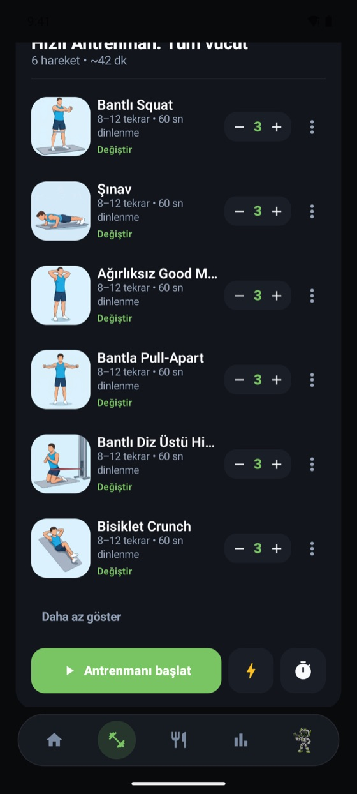
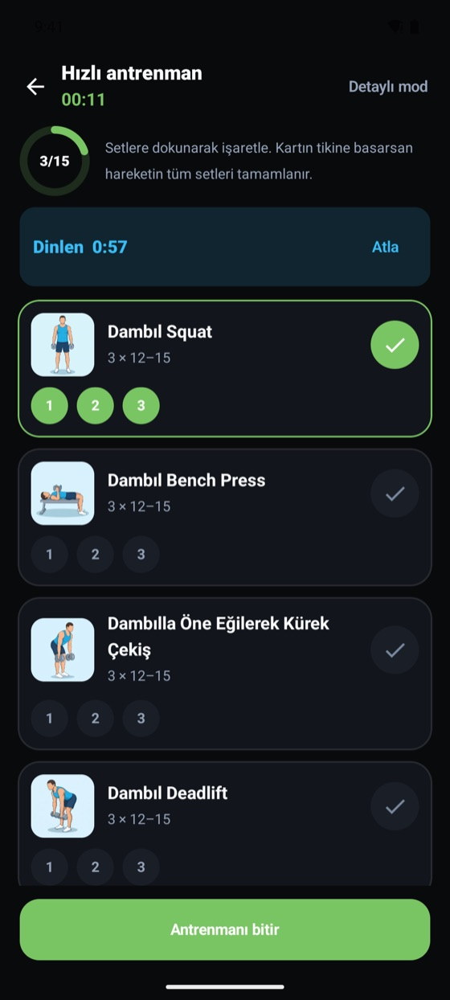
Kalori halkası, protein–karbonhidrat–yağ çubukları ve su takibi tek ekranda. Öğünü yaz, kalorisi Türk mutfağı veritabanından hesaplansın; ya da tabağın fotoğrafını çek.
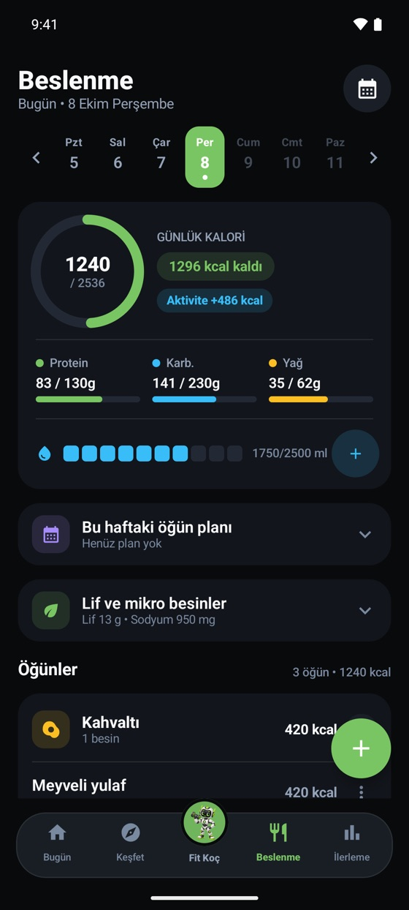
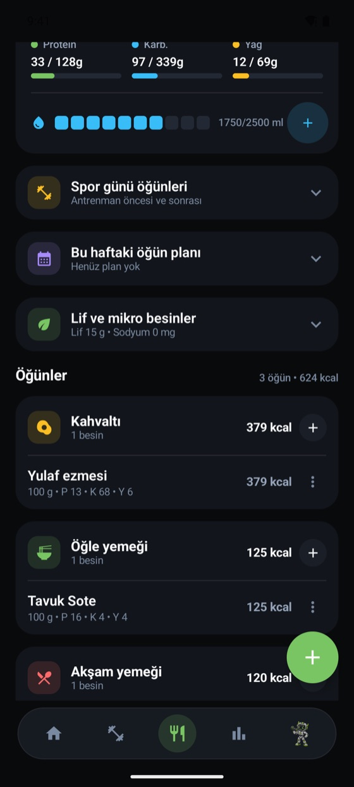
Makineni seç, ayarını canlı değiştir; yaktığın kalori günlük hesabına eklenir. Dışarıdaysan GPS ile rotanı kaydet, hatta rotanı önceden planla.
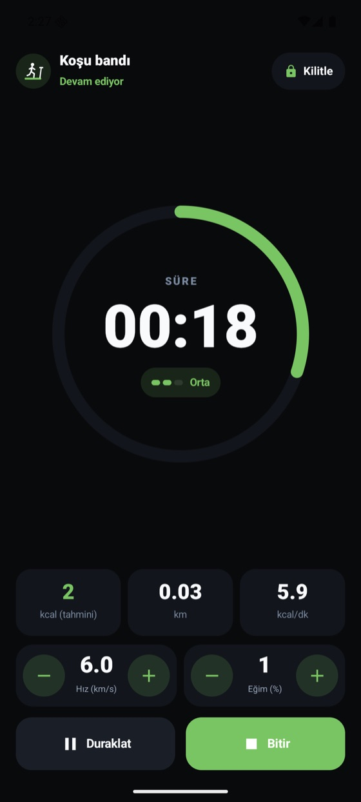
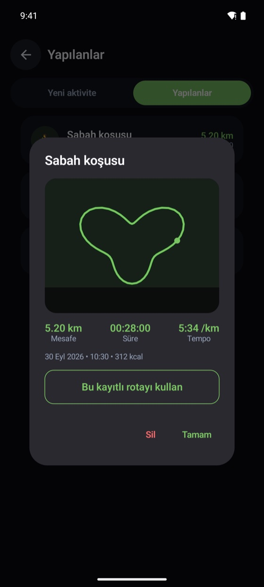
Takvimde hangi günler çalıştığını, seri durumunu ve haftalık antrenman süreni gör. Hedef yolculuğunda kilo hedefine giden yol ara hedeflere bölünür.
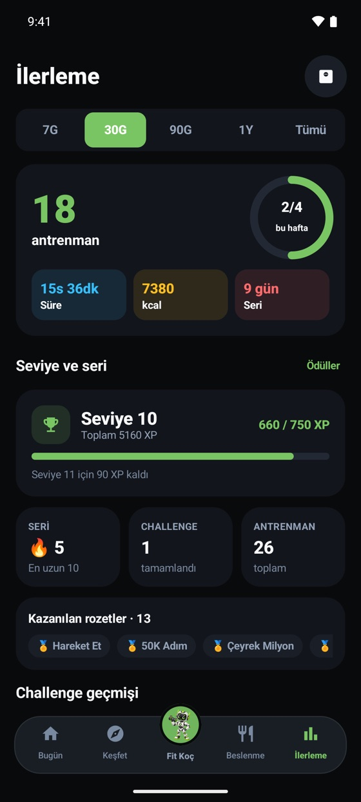
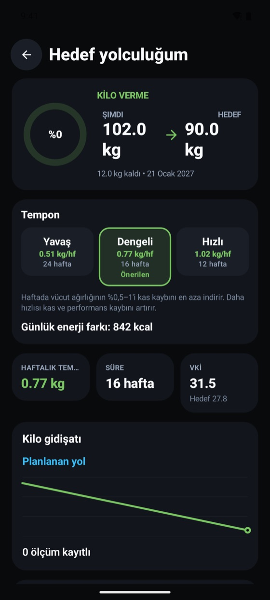
Antrenman, beslenme ya da ilerleme hakkında aklına ne takılırsa sor. Hazır sorularla başla ya da kendi sorunu yaz.
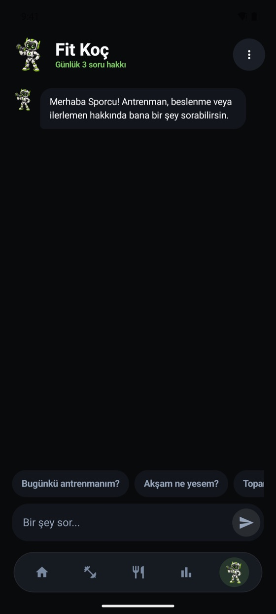
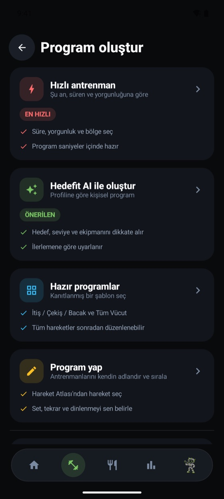
Hedef yolculuğu
Kilo ver, kas kazan ya da formunu koru. Hedefini seç; Hedefit haftalık hızını, bitiş tarihini ve ara hedeflerini hesaplasın. Seçimini değiştirdiğinde yol haritası anında yeniden çizilir.
KİLO VERME
Örnek: 102 kg, 180 cm. Hedefit değerleri profiline göre hesaplar.
Örnek kayıtlar. Kalori uygulamadaki formülle hesaplanır.
Hedefit Rota
Süreye ya da mesafeye göre dönüşlü ya da A → B rota planla. GPS kaydı arka planda sürer; ekranı kapatıp koşuna odaklan.
Koşu · Yürüyüş · Trail koşusu · Doğa yürüyüşü · Bisiklet · Kayak
Paylaşım kartı
Bitirdiğin aktiviteden tek dokunuşla görsel üret: üç şablon (Harita, Minimal, Enerji), hikâye ya da standart format ve canlı önizleme.
Örnek gösterim; uygulamadaki şablonlardan esinlenilmiş çizimdir.
Akıllı saat · yakında
Hedefit saatine de geliyor. Su ekle, setini bitir, dinlenme sayacını izle ve koşunu kaydet; hepsi bileğinden. Wear OS ve Apple Watch için tasarlanıyor.
Saat uygulaması telefonla eşleşir ve aynı hesabı kullanır. Saatinin sağlık verileri ayrıca Health Connect üzerinden de aktarılabilir (Samsung, Garmin, Xiaomi, Amazfit, Pixel Watch / Fitbit).
Tasarım gösterimi; uygulama geliştirme aşamasında. Değerler örnektir.
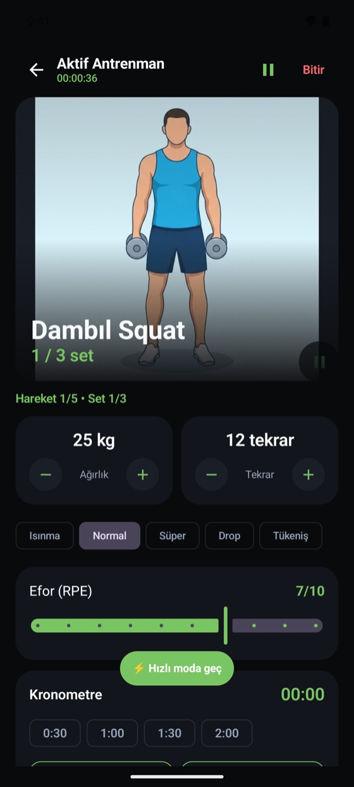
Örnek gösterim: tablette yatay duruş. Ekran görüntüleri telefondandır.
Tablet ve katlanabilir
Tabletini antrenman standına çevir: yatay tuttuğunda hareket listesi ve set ekranı yan yana, dikey tuttuğunda üst üste durur. Elin ağırlıkta, gözün tek ekranda.
Hızlı işlemler
Ana ekranı kendine göre özelleştir; en çok kullandığın kısayollar en üstte kalsın.
Görevler, XP ve başarımlar
Antrenman, adım, rota ve hedeflerinden XP kazan; seviye atla, serini koru, başarımları aç. Her gün yeni görevler seni bekler.
Örnek gösterim; görevler her gün değişir.
Ekranlar
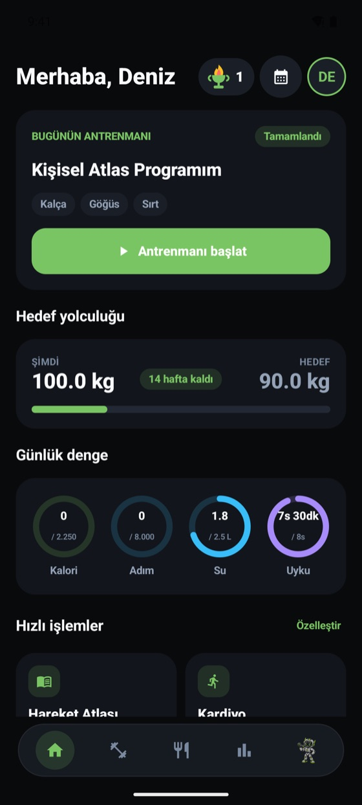
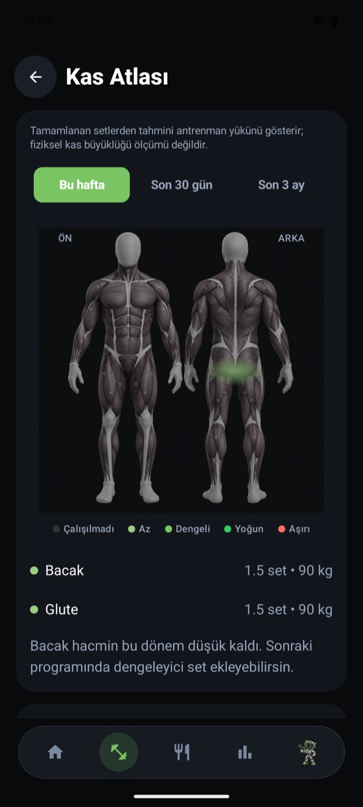
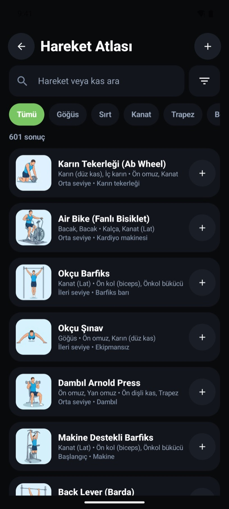
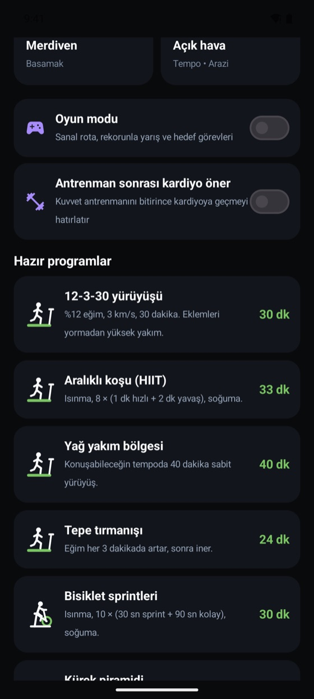
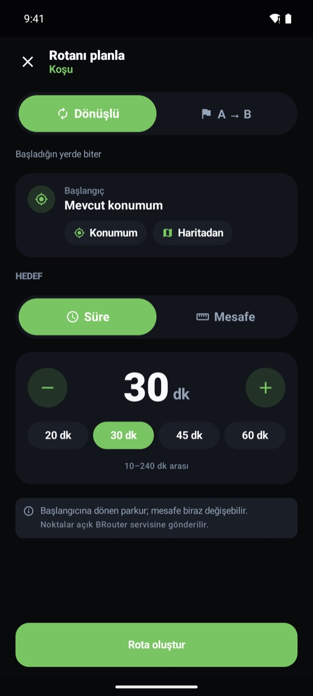
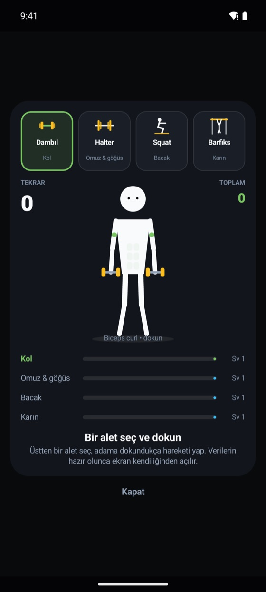
Gizlilik ve güven
Sağlık verisi hassastır. Hedefit’i buna göre kurduk.
Verilerin satılmaz. Sağlık ve beslenme verilerin reklam için paylaşılmaz.
Hesabını ve ona bağlı tüm verileri uygulamadan kalıcı olarak silebilirsin. İstersen önce dondur ya da yalnızca ilerleme verilerini sıfırla.
Konumun, yalnızca Hedefit Rota ile kayıt başlattığında ve kayıt süresince kullanılır.
Öğün ve ekipman fotoğrafları yalnızca analiz için işlenir; sunucularımızda saklanmaz.
Kalori ve makro hedefin profilinden formülle hesaplanır. Yapay zekâ tahmin gereken yerde çalışır ve verin modelleri eğitmek için kullanılmaz.
Arkadaşların yalnızca XP’ni ve etkinlik özetini görür; öğün ve ölçümlerin görünmez. İstersen kullanıcı aramasından gizlenebilirsin.
Sık sorulanlar
Evet, ücretsiz başlayabilirsin. Antrenman, beslenme ve ilerleme takibi ücretsizdir. Fit Koç’a Misafir hesapta günlük 3, ücretsiz hesapta 5 soru hakkın var; görevlerden kazandığın XP bunu artırır. Daha yüksek limitler, tüm hareketler ve reklamsız deneyim için Plus ve Premium planları vardır; ayrıntılar planlar sayfasında. Fiyatlar mağaza sayfalarında yayınlanacaktır.
Hesabına bağlı veriler (antrenman, öğün, rota, ölçümler) güvenli bir bulut veritabanında saklanır ve satır düzeyinde erişim kurallarıyla yalnızca senin hesabına açıktır. Arkadaşların yalnızca XP ve aktivite özetini görür; öğün ve ölçüm kayıtların görünmez. Yapay zekâ özelliklerinde (fotoğraflı öğün analizi, Fit Koç, haftalık değerlendirme, ekipman tanıma) yanıt için gereken bilgiler (yazdığın metin ya da seçtiğin fotoğraf ile profilinden, antrenman ve beslenme kayıtlarından kısa bir özet) yapay zekâ sağlayıcısına gönderilir. Yazarak eklediğin öğünler çoğunlukla Hedefit’in kendi yiyecek veritabanından hesaplanır; veritabanında olmayan bir yiyecek için tahmin gerekirse yazdığın metin de sağlayıcıya gidebilir. Fit Koç; hedef, tercih ve kısıtların gibi dar kategorilerde kısa notları “hafızasında” tutabilir; hesabını sildiğinde bu notlar da silinir; silmeden kaldırılmasını istersen destek adresine yazabilirsin. Kullanıcı adın, en az 2 karakter yazan diğer kullanıcılar tarafından aranabilir; Arkadaşlar ekranındaki “Aramada görün” ayarıyla bunu kapatabilirsin.
Uygulamada Profil ve ayarlar → Hesabı kalıcı sil yolunu izle. Silme kalıcıdır. Silmeden önce hesabını dondurabilir ya da yalnızca ilerleme verilerini sıfırlayabilirsin. Ayrıntılar için hesap silme sayfasına bak.
Evet. Misafir olarak başlayıp ilerlemen kaybolmasın diye istediğin zaman hesabını kaydedebilirsin.
Hayır. Hedefit bir fitness ve alışkanlık takip uygulamasıdır; tıbbi tanı ya da tedavi yerine geçmez. Sağlık sorunun varsa programa başlamadan önce doktoruna danış.
Hedefit’in kendi saat uygulaması geliştirme aşamasında: Wear OS ve Apple Watch için su ekleme, antrenman seti, dinlenme sayacı ve kardiyo kaydı bileğinden kontrol edilecek. Bunun dışında Android’de saatinin sağlık verileri Health Connect üzerinden (Samsung, Garmin, Xiaomi, Amazfit, Pixel Watch / Fitbit) telefon uygulamasına aktarılabilir.
Evet. Tabletlerde antrenman ekranı yatayda yan yana, dikeyde üst üste bölünen “stand modu” ile açılır. Katlanabilir telefonlar açıldığında geniş ekran düzenine (yan gezinme çubuğu) geçer; stand modu yalnızca tabletlerde açılır.
Android (Google Play) ve iOS (App Store). Uygulama Türkçe ve İngilizce arayüz sunar.
Hedefit Google Play ve App Store’da yayına hazırlanıyor.